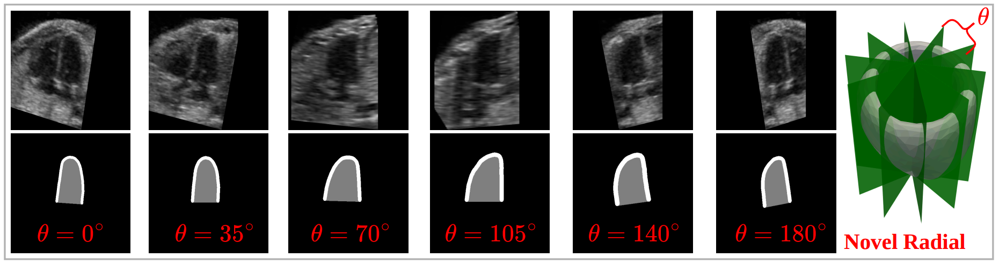
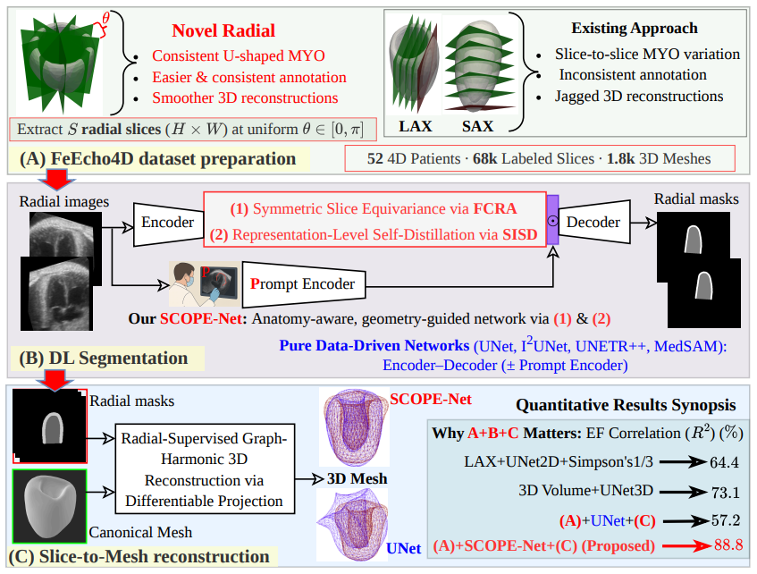
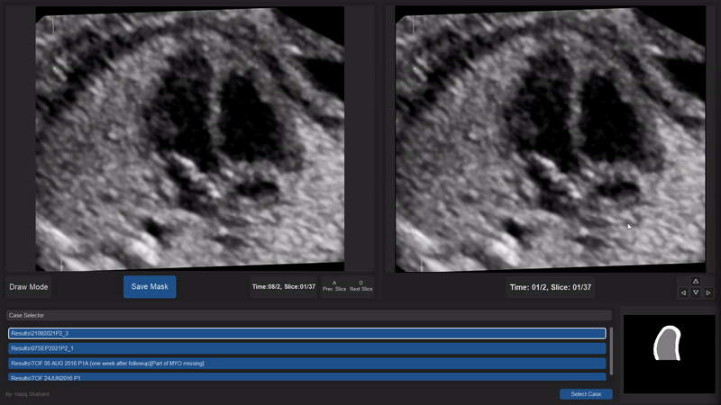
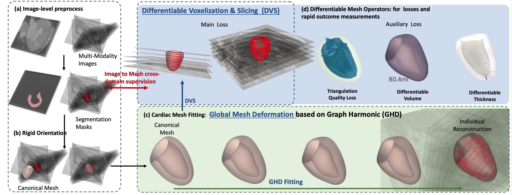

Fetal echocardiography is the primary imaging modality for prenatal assessment of cardiac anatomy and function, yet most clinical analysis and existing deep learning (DL) approaches remain fundamentally two-dimensional. Conventional 2D views suffer from several important limitations:
In contrast, 3D echocardiography captures the full cardiac volume without requiring precise imaging-plane alignment, making it less susceptible to foreshortening and more suitable for accurate anatomical and functional assessment. Although 3D/4D fetal echocardiography is clinically available through Spatio-temporal Image Correlation (STIC) acquisitions, its adoption remains limited by challenges in visualization, functional quantification, and automated analysis. While DL-based 3D/4D cardiac reconstruction offers a promising solution, progress has been constrained by the lack of publicly available 4D datasets and the complexity of volumetric DL algorithms.
Preparing 4D ground-truth annotations for fetal echocardiography is highly challenging, particularly for temporally coherent 4D analysis. Several key factors contribute to this difficulty:

Fig. 1: Example radial slices at different angular positions (θ ∈ [0°, 180°]) demonstrating the consistent U-shaped MYO appearance produced by radial slicing, enabling easier and more anatomically consistent annotation across views.
To overcome the challenges of 3D/4D annotation, we introduce radial slicing (see Fig. 1), which yields consistent and interpretable U-shaped MYO contours, unlike traditional SAX and LAX views. Our radial slicing extracts 2D slices by rotating the slicing plane around the LV longitudinal axis at fixed angular intervals (θ ∈ [0, π]), providing structured coverage of the MYO from multiple orientations. This cylindrical-coordinate acquisition enables consistent LV visualization around the heart, producing stable U-shaped MYO appearances across slices, as shown in Fig. 1.
Building upon this radial representation, our framework introduces two key innovations, as shown in Fig. 2 (details in the paper):

Fig. 2: Proposed full-stack framework from data preparation to mesh reconstruction. (A) Radial FeEcho4D data preparation. (B) Segmentation network incorporating geometric inductive bias. (C) Sparse radial slice-to-3D reconstruction. A purely data-driven UNet produces anatomically implausible meshes (ground truth: red wireframe and estimated: blue wireframe), leading to poor EF estimation.
Our FeEcho4D dataset development from raw 4D volumes has six key steps:
All steps are described in detail below, including technical and implementation specifics, to ensure reproducibility.
Raw STIC acquisitions were retrieved directly from the fetal echocardiography system and processed with 4DView software (GE Healthcare, Chicago, IL, USA) to export temporally resolved 3D volumes. For each temporal extraction, slice number and spacing were kept constant to preserve the spatial–temporal integrity of the original 4D ultrasound data for subsequent analysis. The following Fig. 3 shows examples of the 3D extracted volume at different times for the same patient.
Fig. 3: Raw STIC fetal echocardiography volume exported via 4DView software and corresponding radial slices at selected time frames.
All volumes were radially resampled using Algorithm 1, as illustrated in Fig. 4. This procedure generates a set of uniformly sampled radial slices (H×W) at fixed angular intervals, which together form structured radial 3D volumes. Compared to conventional SAX and LAX views, where the left ventricular shape often transitions from an apparent U-shape to blob-like contours, radial slices consistently preserve a U-shaped anatomy across depths. This structural consistency greatly facilitates accurate and efficient manual annotation, as shown in the segmentation of all S slices (see Fig. 1).
Inputs: 3D volume \( \mathbf{V}\in \mathbb{R}^{H \times W \times D} \), spacing \( \mathbf{S}=[s_x,s_y,s_z] \), angle set \( \Theta \).
Outputs: Radial slices \( \{ I_\theta \mid \theta \in \Theta \},\; I_\theta \in \mathbb{R}^{H \times W} \).
Fig. 4: Radial slice extraction at a given rotation angle (θ) with corresponding ultrasound image and myocardium mask.
Using a custom-built annotation tool (details in our SegmentationApp), experts manually delineated the LV's MYO and cavity by marking points along their boundaries (see Fig. 5). The tool supports 3D volume loading, interactive contour drawing, and real-time quality control through mask overlay. It also provides temporal navigation to capture cardiac motion, particularly valuable in cases affected by acoustic dropout, and annotation toggling for iterative refinement. To ensure accuracy and consistency, all annotations underwent multiple rounds of expert review followed by cardiologist validation.

Fig. 5: Manual delineation of myocardium at ED and ES by SegmentationApp.
FeEcho4D generates dense cardiac masks by propagating sparse ED and ES annotations using B-spline Fourier (BSF) motion model (Algorithm 2), which blends local and global deformations and regularizes trajectories to capture periodic motion (as shown in Fig. 6). This ensures temporally coherent, anatomically consistent masks, further refined with skeleton-based width correction (Algorithm 3) to maintain uniform myocardial thickness, and all results are manually reviewed for accuracy.
Inputs: Radial slices \( \{x_\theta^t\}_{t=1}^T \), ED/ES masks \( M_{\mathrm{ED}}, M_{\mathrm{ES}} \), spacing \( s \), Fourier order \( N \), B-spline level \( L \).
Outputs: Dense masks \( M_t \in \mathbb{R}^{S\times H\times W},\ t=1,\dots,T \).
Return: \( \{M_t\}_{t=1}^T \)
Inputs: Raw propagated mask \( M_t \in \mathbb{R}^{S\times H\times W} \); tail–ratio \( \tau\in(0,1) \); opening radius \( r \ge 0 \).
Outputs: Refined mask \( \widetilde{M}_t \in \mathbb{R}^{S\times H\times W} \) with consistent width.
Return: \( \widetilde{M}_t \)
Fig. 6: Motion-guided mask propagation across all time frames.
Prior to mesh reconstruction (details in the paper), radial segmentations (manual or SCOPE-Net predictions) are embedded into a common 3D coordinate system. Each slice is rotated around the LV center according to its acquisition angle, producing a sparse cylindrical representation for geometrically consistent mesh reconstruction via Graph Harmonic Deformation (GHD) (details in our teamwork: GHD).
The 3D over time left ventricular meshes are reconstructed into smooth, temporally consistent meshes using GHD. The meshes are further processed with Differentiable Voxelization & Slicing (DVS) (as shown in the following Fig. 7) (details in Algorithm 4), enabling differentiable conversion to voxel grids and slices for precise dynamic metrics and seamless integration with learning-based models. The resulting 4D meshes of ten different example patients are shown in the following Fig. 8.
Inputs: Binary mask sequence \( \{M_t\}_{t=1}^T, \; M_t \in \mathbb{R}^{S\times H\times W} \); canonical mesh \( \mathcal{M}_0 \in \mathbb{R}^{V\times 3} \); graph basis \( U \in \mathbb{R}^{V\times B} \); radial slices \( \{x_\theta^t\}_{t=1}^T \).
Outputs: Deformed mesh sequence \( \{\mathcal{M}_t\}_{t=1}^T,\; \mathcal{M}_t \in \mathbb{R}^{V\times 3} \).
Return: \( \{\mathcal{M}_t\}_{t=1}^T \)

Fig. 7: Slice-to-mesh reconstruction using DVS with GHD mesh fitting.
Fig. 8: Reconstructed 4D left ventricular meshes from the FeEcho4D dataset.
Clinical biomarkers, such as Stroke Volume (SV), Ejection Fraction (EF), Global Longitudinal Strain (GLS), and Global Circumferential Strain (GCS), are derived from the reconstructed left ventricular meshes, as explained in detail in Algorithm 5 and the following Fig. 9. SV and EF are computed from endocardial volumes, while GLS and GCS are obtained by averaging changes in apex-to-base lengths and mid-ventricular circumferences across representative planes or cross-sections, excluding extreme outliers for robustness.
Outlier removal (OL) ensures robust estimation by excluding extreme geometric deviations caused by noise or irregular contours.

Fig. 9: Computation of GLS, GCS, EF, and SV from fitted myocardium meshes at ED and ES.
The FeEcho4D dataset comprises fetal 4D echocardiography sequences from 52 annotated subjects, including both healthy and congenital heart disease (CHD) cases such as Tetralogy of Fallot (ToF) and dextro-transposition of the great arteries (dTGA). The dataset provides spatiotemporal annotations of the left ventricle (LV) and myocardium (MYO), together with corresponding temporally coherent 4D LV meshes for cardiac reconstruction and functional analysis.
Each patient folder (Patient0xx) follows the filename convention:
Patient0xx_slice0yytime0zz.png
xx = patient ID
yy = slice ID
zz = time frame ID
Patient0xx/
├── image/
│ ├── Patient0xx_slice0yytime0zz.png
│ ├── ...
│ └── Radially extracted 2D fetal echocardiography slices
│
├── mask/
│ ├── Patient0xx_slice0yytime0zz.png
│ ├── ...
│ └── Manual LV/MYO segmentations
│ ├── LV cavity = 127
│ └── MYO = 255
│
├── mesh/
│ ├── mesh_time0zz.obj
│ ├── ...
│ └── Reconstructed 3D LV meshes over time
│
├── scribble/
│ ├── Patient0xx_slice0yytime0zz_scribbleTypeN.png
│ ├── ...
│ └── Weak scribble prompts (N = 1 ... 10)
│
├── Patient0xx_bbox.csv
│ └── Bounding-box prompts:
│ ├── filename
│ ├── xmin
│ ├── ymin
│ ├── xmax
│ └── ymax
│
├── Patient0xx.mp4
│ └── 3D LV mesh visualization over time
│
└── Patient0xx_info.cfg
├── diagnosis = healthy / ToF / dTGA
├── x_mm
├── y_mm
├── z_mm
├── num_frames
├── ED_time
└── ES_time
Patient0xx/
├── image/
│ ├── Patient0xx_slice0yytime0zz.png
│ ├── ...
│ └── Radially extracted 2D fetal echocardiography slices
│
└── Patient0xx_info.cfg
├── diagnosis
├── x_mm
├── y_mm
├── z_mm
└── num_frames
These additional 50 unannotated 4D studies are provided to support semi-supervised learning approaches and facilitate future methodological research and development.
The dataset is available via Zenodo for non-commercial research use. [Download]
The source code is available on GitHub.
4D Reconstruction of Fetal Left Ventricle from Echocardiography via 2.5D Radial Segmentation and Graph-Fourier Reconstruction
Published in: IEEE Transactions on Medical Imaging (TMI), 2025.
Explicit Differentiable Slicing and Global Deformation for Cardiac Mesh Reconstruction
Published in: Medical Image Analysis (MedIA), 2026.
If you find this dataset useful, please consider citing the above works 🙂